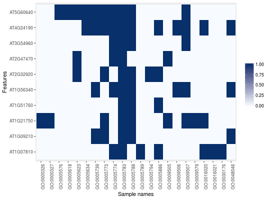

MSnSetCreates a new "MSnSet" instance populated
with a GO term binary matrix based on an original object.
makeGoSet(object, params, namespace = "cellular_component", evidence = NULL)
| object | An instance of class |
|---|---|
| params | An instance of class |
| namespace | The ontology name space. One or several of
|
| evidence | GO evidence filtering. |
A new "MSnSet" with the GO terms
for the respective features in the original object.
library("pRolocdata") data(dunkley2006) data(dunkley2006params) goset <- makeGoSet(dunkley2006[1:10, ], dunkley2006params) goset#> MSnSet (storageMode: lockedEnvironment) #> assayData: 10 features, 22 samples #> element names: exprs #> protocolData: none #> phenoData: none #> featureData #> featureNames: AT1G09210 AT1G21750 ... AT1G07810 (10 total) #> fvarLabels: assigned evidence ... markers (8 total) #> fvarMetadata: labelDescription #> experimentData: use 'experimentData(object)' #> Annotation: #> - - - Processing information - - - #> Constructed GO set using cellular_component namespace [Mon Jan 29 23:43:40 2018] #> MSnbase version: 2.5.6exprs(goset)[1:10, 1:5]#> GO:0005783 GO:0005739 GO:0005773 GO:0048046 GO:0005788 #> AT1G09210 1 1 1 1 1 #> AT1G21750 1 0 1 0 1 #> AT1G51760 1 0 0 0 1 #> AT1G56340 1 1 0 1 1 #> AT2G32920 1 0 1 0 1 #> AT2G47470 1 0 0 0 0 #> AT3G54960 1 0 0 0 1 #> AT4G24190 1 1 1 1 1 #> AT5G60640 1 1 1 0 1 #> AT1G07810 1 0 0 0 0image(goset)